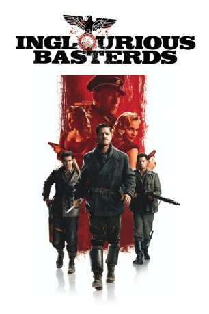

#107 Inglourious Basterds
Auszeichnungen: 1 Oscars gewonnen für 7 Oscars nominiert 1 GoldenGlobes gewonnen 1 BAFTA-Awards gewonnen
 
 IMDB-Wertung: 8.3 / 10
IMDB-Wertung: 8.3 / 10  IMDB-TOP-Platzierung: 93
IMDB-TOP-Platzierung: 93  Metascore: 69
Metascore: 69 
Im von Deutschland besetzten Frankreich muss Shosanna ansehen wie ihre Familie durch Oberst Hans Landa brutal ermordet wird. Sie kann entkommen und flieht nach Paris. Gemeinsam mit seinen 8 Männern, einer Elitetruppe aus jüdisch-amerikanischen Soldaten, will Offizier Aldo Raine systematische Vergeltungsschläge gegen Nazis durchführen. Sie werden in Frankreich abgesetzt, um dort unterzutauchen. Von den Deutschen als ‚Die Bastarde' gefürchtet versuchen sie den Führer des III. Reichs zu töten.
Jahr: 2009
Dauer: 153 Minuten
FSK: 16
Land: USA Studio: Weinstein Company, TheTonspuren: DTS - ,
Untertitel: Deutsch, Englisch,
Auflösung: 1080p (1920×800) Größe: 13004 MB
Genre: Abenteuer, Drama, Krieg
Regisseur:  Quentin Tarantino,
Quentin Tarantino,  Eli Roth
Eli Roth
Drehbuch: Quentin Tarantino
Soundtrack:
Darsteller:
Datei: X:\2009(G-M)\Inglourious Basterds (2009, FSK16, 1920x800).mkv seit 03.02.2015
Festplatte: HD 2009(G-Z)-2010(A-F)
 Es gibt insgesamt 82 Filme in der Gruppe '2009(G-M)'
Es gibt insgesamt 82 Filme in der Gruppe '2009(G-M)'